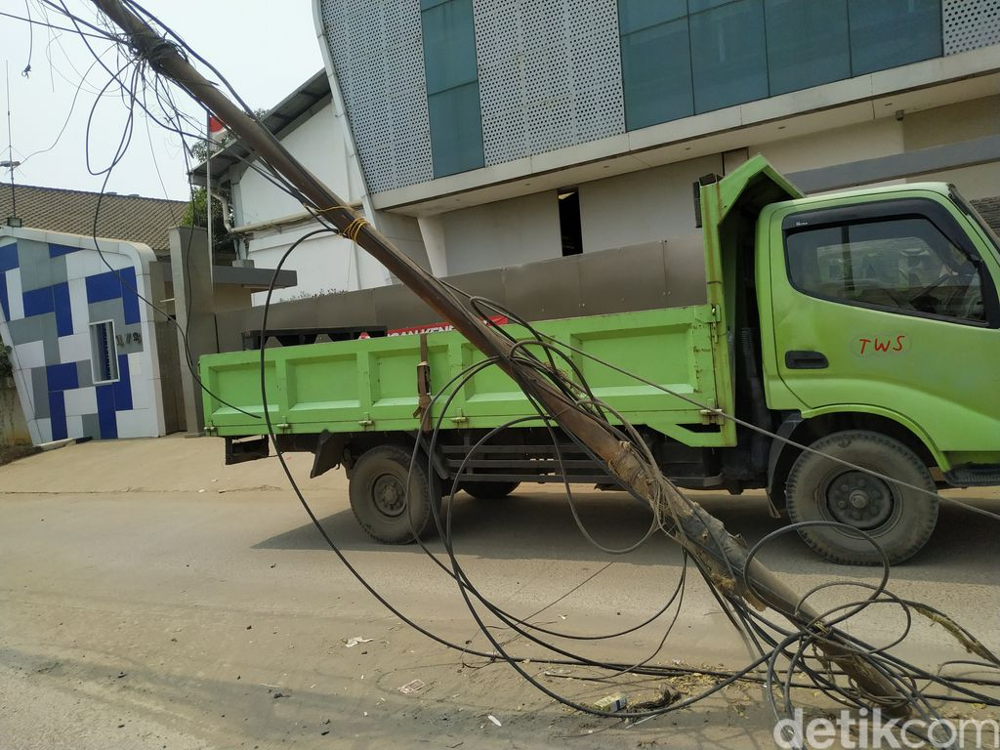

PLN Nyatakan Sudah Tertibkan Semua Tiang Listriknya di Jl Perancis
Jakarta - Selain permukaan jalan yang hancur, Jl Raya Perancis di Kabupaten Tangerang dikenal karena tiang-tiang kabel yang berdiri di badan jalan. Kondisi berbahaya ini dinyatakan pihak PLN sudah berhasil diatasi. "Untuk pemindahan tiang PLN sudah selesai semua," kata PLN UP3 Teluk Naga dalam keterangannya kepada detikcom, Selasa (23/5/2023).
Hanya, tidak semua tiang kabel di Jl Perancis kawasan Kelurahan Dadap itu milik PLN. Ada pula tiang kabel milik instansi lain. Untuk tiang listrik milik PLN, semuanya sudah ditertibkan sejak bulan dua.
"Selesai tanggal 16 Februari 2023," kata PLN UP3 Teluk Naga.
Penertiban dilakukan dengan cara pencabutan tiang yang posisinya tidak sesuai, misalnya di tengah jalan atau di badan jalan. PLN kemudian menancapkan tiang di posisi baru sebagai penggantinya. Ada pula jaringan listrik yang dipindah.
Ada 83 pencabutan tiang listrik, 58 penancapan tiang listrik, dan 102 pemindahan jaringan.

Sumber : https://news.detik.com/berita/d-6734706/pln-nyatakan-sudah-tertibkan-semua-tiang-listriknya-di-jl-perancis
Setelah Argentina, Lawan Indonesia Selanjutnya Bisa Saja Brasil!
Jakarta - Indonesia vs Argentina akan berlangsung di FIFA Matchday pada 19 Juni nanti. Ketum PSSI Erick Thohir mengaku, lawan Skuad Garuda selanjutnya bisa saja Timnas Brasil! Baca Selengkapnya...
24-05-2023Pemprov DKI Akan Benahi Bantaran Kali di Hek Kramat Jati pada Juli
Pemprov DKI Jakarta menyiapkan anggaran sebesar Rp 9,5 miliar untuk membangun tanggul di Kali Baru,... Baca Selengkapnya...
24-05-2023